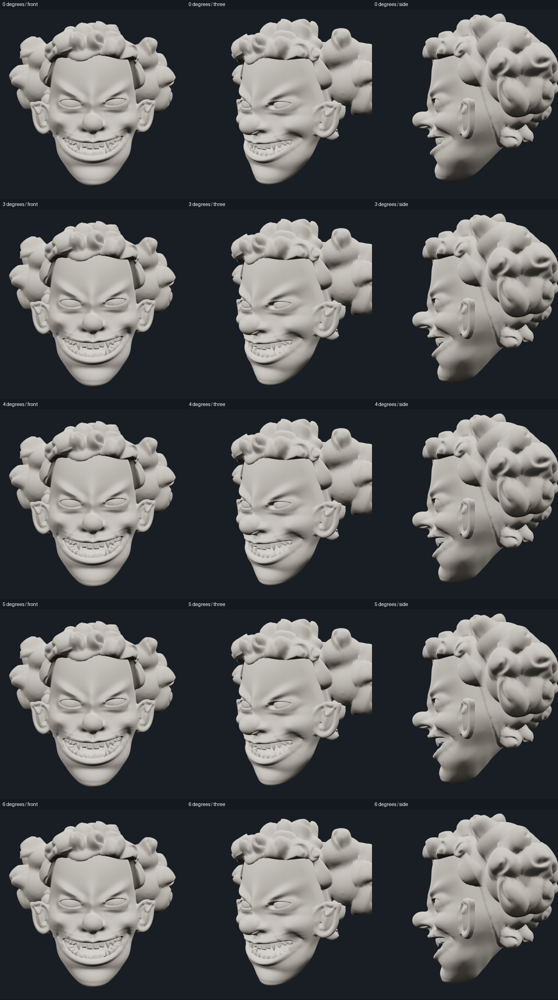
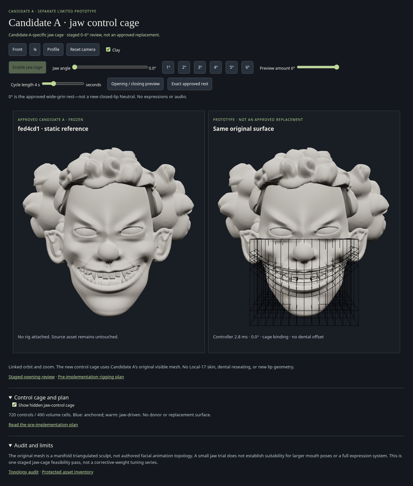

CANDIDATE-A-SPECIFIC JAW CAGE · REVIEW ONLYOriginal sculpt, progressively larger jaw openings.
Interactive reference and cage prototype
The pre-implementation plan was committed as 8dc4977. The approved 9d339cb visual checkpoint, prior small-jaw trial and production remain unchanged. This stage implements a jaw-control volume, not a full expression cage.
Actual matched stages
Rows: approved rest, 3°, 4°, 5°, 6°. Columns: front, three-quarter, profile. Each increment was rendered and inspected before testing the next. Cage weights were not retuned between stages.

Opening measurement
Vertical separation of tracked source lip landmarks: 0.2643 units at rest, 0.3305 at 5°, 0.3432 at 6°. This is a landmark proxy; the rendered lip opening and dental framing were also inspected. It does not certify every internal collision.
Adjustable animation
The interactive viewer exposes maximum opening and cycle duration, plus fixed-angle buttons. The video is an actual browser recording using the same cage/controller and clock-based preview.
What the cage is
720 controls in 490 lower-midface volume cells. Upper/maxillary, lip, commissure, cheek and mandibular rows are placed from Candidate A's mouth profile, with depth layers. The cage interpolates jaw rotational influence; original vertices retain their own rest shape. The visible surface is never fitted or projected to a cage or donor. Upper teeth stay fixed; lower enamel, gingiva and tongue rotate together without reseating.
View the control structure

Scope and limitation
6° is the highest inspected stage, not a proof of an unlimited anatomical range. There are no new expressions, audio or percussion mappings. A larger/full-expression cage still needs separately reviewed anatomical control-shell authoring. If this bounded volume fails a future visual gate, stop rather than add ad-hoc lip correctives.
Rest match · 6° geometry and dental checks · Animation check
Concrete plan written before implementation
# Candidate-A-specific cage: concrete jaw-stage plan
Protected reference: `9d339cb`, tag `checkpoint/candidate-A-visual-approved`. Candidate A remains the only rendered skin. The 0–3° trial and every existing viewer stay untouched.
## Audit and choice
The original has 82,720 vertices and 165,436 triangles. Its source audit found no open/non-manifold edges or degenerate triangles. It has no authored facial edge loops or skin weights. The prior small trial directly computed a smooth jaw influence at each original vertex; it was not a control cage. Its visible 0–3° result is a reference, not evidence that arbitrary larger motions work.
For this stage, build a lower-midface **volumetric jaw-control cage**, not a full expression rig. Use Candidate A's own `mouthLine` and `lipLandmarks` to place distinct maxillary/upper-lip, inner-mouth, lower-lip, lower-cheek and chin rows, through multiple front-to-back layers. Left/right commissure nodes have partial jaw ownership; upper-lip/maxillary nodes remain anchored; mandibular nodes follow the existing transverse hinge. Hair, eyes, nose, brow, ears and rear skull remain outside the moving field. The original sculpt is neither projected onto the cage nor rebuilt.
Visible vertices bind to neighboring cage nodes in original head coordinates. Interpolate **rotational influence**, rather than adding independently scaled lip displacements or linearly averaging donor surface positions. For this single common jaw axis, interpolated rotation angles retain rigid motion in mandibular regions. C2 cell falloff avoids piecewise-linear normal seams. Compute bind-time spatial derivatives; transport source normals with the deformation Jacobian. At zero, bypass interpolation and copy original positions/normals exactly.
Dental arches remain independent rigid anatomical objects: fixed upper arch; lower enamel, gingiva and tongue rotate together about [0,-.025,-.235]. Retain original crown geometry and rest transforms; no reseating, scaling, or per-tooth offsets.
## What this deliberately does not claim
This is a Candidate-A-specific jaw-control volume, not an authored all-expression cage. No brow/eye/lip-purse controls, generic donor, Local-17 skin or bindings are introduced. A scalar rotational field cannot guarantee natural large articulation: it may still compress commissures or distort the inner cavity. C2 continuity does not guarantee good anatomy or absence of self-intersections. This bounded experiment must establish that visually.
## Gates and stop rule
1. Static source/normal/index/dental equality and matched front/¾/profile appearance at 0° before motion.
2. Recheck 3° against the prior small-jaw trial; stop if it introduces new distortion.
3. Then render 4°, 5°, 6° one increment at a time in front/¾/profile. Inspect lip thickness, cavity expansion, corner continuity, chin and dental containment. Measure original inner lip landmark separation alongside renders; an increasing angle must produce an actual increasing opening.
4. Stop at the FIRST visible failure; preserve the last visually clean sampled degree. Do not add per-pose corrective patches or keep changing cage weights in this pass.
5. If a stage passes, check triangle orientation/area, fixed upper regions, rigid dental transforms and exact return. These do not replace visual judgment.
6. Only the clean sampled range is exposed for smooth opening/closing, with adjustable maximum and speed. Match wall-clock animation and pause at rest; no audio or new expressions.
If this volume fails, the next workflow is an anatomically authored lower-face control shell with explicit lip/commissure loops, thickness/depth layers and constrained surface/volume binding to Candidate A. Author that in a DCC/cloud modeling workflow, preserving original rendered rest offsets; do not resume ad-hoc lip correctives. It would require a separate static-cage review before motion.